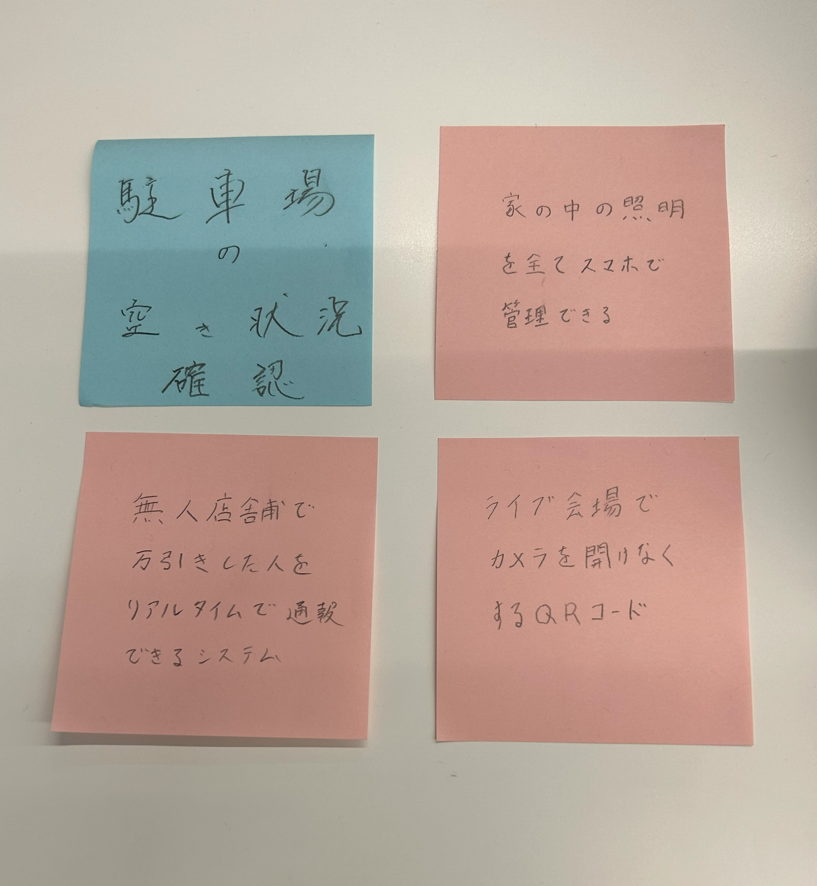

第2回
1.グループワーク
上記がグループワークででたアイディアである。今回は二人で取り組んだため計4つしか出せなかった。

2.自分で考えたアイディア
私が考えたアイディア3つのうち、今回は最近ニュースで話題になっていた無人店舗販売の万引き問題についてIoTで解決できないかと考えてみた。以下が今回のスケッチである。
先日報道されたニュースでは、洋服の無人販売店舗で3000円ほど払う必要があるのに1000円しか払わず店から出て行ったという内容であった。
上記のスケッチはiotを使って解決できるのではないかと考えてみた。ニュースで報道された店舗は未会計の商品があってもサイレンや音が一切ならず後日防犯カメラによって判明して送検された。
万引きは現行犯逮捕でなければ捕まえることは難しいと聞いた事がある。よって、私は未会計の商品に反応して音で周りに伝えるiotの製品があれば現行犯で確実に捕まえられるのだはないかと考えた。
おそらく、私が知る限りではヨドバシカメラのエスカレーター付近にある二つの機会みたいなものが無人店舗にあれば万引きは防げると思う。